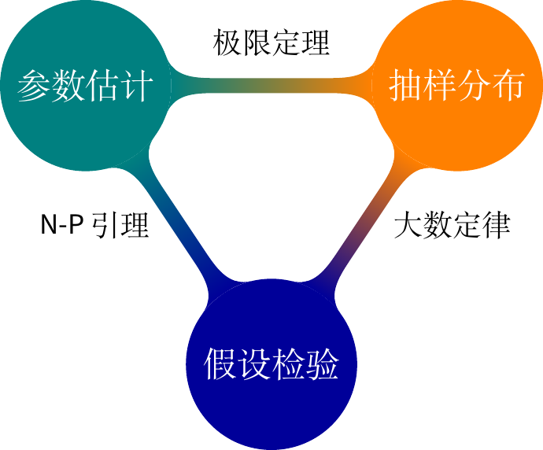

前言
世界上只有一种英雄主义，就是看清生活的真相之后依然热爱它。
— 罗曼·罗兰
我在本书每个章节开头都会给一条名人名言，不要笑，生活已经很苦了，写书让我感到快乐和慰藉。这些名人名言伴随了我心路成长的历程。
既然是《现代统计图形》的第二版，和第一版的主要区别是什么？目标读者是否一样？
全书的图形风格将更加的协调和美观，无论 Base R 还是 ggplot2 绘制的图形都要遵循这一点。
全书的组织和内容更加体现应用性，将更多地从数据和应用场景出发，而不是从图形种类和技术出发。
更加强调数据可视化在探索性、可重复性、沟通交流和信息传递中的重要性。
全书图片采用灰度调色板统一配色，黑白印刷也不会出现图文颜色描述不匹配的情况，方便出版打印，也能一定程度上降低书籍的定价，部分图形提供彩版。
尽量兼顾统计理论的严谨和统计图形的直观，对于有明显统计意义的图形都要讲述其统计原理，做到知其然且知其所以然。
统计图形的历史不再单独成章介绍，而是在具体的数据分析和应用时介绍或者作为一个章节的片尾故事。
在介绍统计理论和可视化理论的时候，尽可能多地使用 Base R 基础数据集，基础数据集涉及的知识范围很多很广，故事也多，且稳定可靠。应用部分尽可能多地采纳开放数据，现代工业数据背景，和读者有亲近感，有实际参考价值，有经验教训可期。
应用部分，数据集取材于 BBC，经济学人，尽可能来源于真实场景，比如 kaggle 数学建模，天池比赛，黑子活动这样的 R 内置数据集也可以扩展到如今，分析的对象不做限制。目的：一是紧跟时代，二是加强读者对统计学的了解，向来从历史和人物的角度引入比较容易让人接受。
我们希望目标读者学过一点微积分、线性代数和非专业的统计学，对数据分析和可视化，乃至整个数据科学都感兴趣。本书非常适合经济管理、新闻传播、社科医学、统计专业的高年级本科生和研究生，对从事数据相关工作的商业分析师和算法工程师会非常有帮助，对有志从事数据科学的其它专业学生和已从事相关工作的人也有价值。
国内外介绍统计图形的书肯定不止这一本，本书独特的价值在哪里？
本书从数据和场景出发，应用性会非常强，其次，数据分析、可视化和信息展示的过程可重复，既照顾到技术的快速发展又有很强的稳定性，结合作者多年来从事数据科学工作的实践经验，从学以自用到学以致用，相信会很有参考意义。
你为什么要写这样一本书，你的创作初衷是什么？
我在读本科学习数理统计的时候接触了 R 语言，自此和数据可视化结缘，曾也专注于统计理论的学习，但越学越觉得建立统计直觉和学习理论一样的重要。工作后，一直从事数据分析相关的工作，从本科以来就有记笔记的习惯，读研究生的时候接触了 rmarkdown 和 bookdown，线下笔记可以很好的线上化，分门别类，不少人也知道我的一些技术笔记在 Github 上迭代过好几轮，经年累月，受益匪浅，持续的技术和业务沉淀让我决心以出版书籍的标准再次整理笔记和素材。
国内外，相关书籍的概况如何？
早年比较经典的书籍包括《Graphics of Large Datasets: Visualizing a Million》(Antony Unwin 2006) 和《Handbook of Data Visualization》(Chen, Härdle, 和 Unwin 2008)。近些年，新的可视化工具和技术日趋成熟，《R Graphics》主要介绍了 R 语言环境中栅格绘图系统 (Murrell 2018)。在此基础上，衍生出 ggplot2 扩展包，它基于图形语法，建立了从数据到图形的映射。ggplot2: Elegant Graphics for Data Analysis 主要介绍了 ggplot2 绘图技法 (Wickham 2016)，紧接着出现了以 ggplot2 为主的图形食谱 R Graphics Cookbook (Chang 2018)，主要解决读者作图过程中常碰到的问题。而《Displaying Time Series, Spatial, and Space-Time Data with R》(Lamigueiro 2018) 针对时间序列数据、空间数据和时空数据提供了详细的介绍，《Interactive web-based data visualization with R, plotly, and shiny》(Sievert 2020) 着重介绍了以 plotly 和 shiny 为代表的图形交互能力。 Kieran Healy 的 Data Visualization: A practical introduction (Healy 2019) 和 Claus O. Wilke 的 Fundamentals of Data Visualization (Wilke 2019) 由浅入深地介绍了数据可视化的要素和原则，而 Thomas Rahlf 的《Data Visualisation with R》(Rahlf 2019) 提供了丰富的示例。国内陈为老师的《数据可视化》(陈为, 沈则潜, 和 陶煜波 2019) 也非常值得一看。
你为什么要讲创作的心路历程？
因为我觉得过程比结果重要，身临其境才有感同身受，培养延迟满足感很重要， 2019年我在论坛发问：书应该怎么写才符合素质教育的理念？。 国内外有大量非常好的书籍介绍统计学史，一些基本概念的来龙去脉， 比如《Past, Present, and Future of Statistical Science》(Lin 等 2014)、 《Fisher, Neyman, and the Creation of Classical Statistics》(Lehmann 2011)、 《The Lady Tasting Tea: How Statistics Revolutionized Science In The Twentieth Century》(Salsburg 2001)、 《Statisticians of the Centuries》(Heyde 等 2001) 和 《Leading Personalities in Statistical Sciences: From The Seventeenth Century to The Present》 (Johnson 和 Kotz 1997)， 国内也有很多，比如《统计发展史》(陈善林 和 张浙 1987)、《数理统计学简史》(陈希孺 2000) 和《统计学漫话》(陈希孺 和 苏淳 2016)等， 还有人物传记类，比如《Neyman》(Reid 1982) 及其译作(Reid 1987)、《漫漫修远攻算路：方开泰自述》 (方开泰 2016) 和《道德文章垂范人间：纪念许宝騄先生百年诞辰》 (许宝騄先生纪念文集编委会编 2010)，IMS 的统计科学访谈文章1， 还有一些文章，比如吴建福老师的《从历史发展看中国统计发展方向》(吴建福 1986)和《统计学者的工作及风范：灵感、抱负、雄心》(吴建福 2011)，还有 2010年新办的杂志《数学文化》，2009年丘成桐、杨乐等主编的《数学与人文》 丛书等，统计之都 也有大量访谈形式的文章，非常值得一读。更多统计历史相关的材料见 https://github.com/sctyner/history_of_statistics，真是篇幅所限，没法一一列举。
培养开阔的思维，广泛的人际关系和优秀的沟通能力，不走极端，专业技术只是决定你的起点，软实力将决定你的高度。以史为镜可知兴替，突破自己的局限，少犯一些错误。要认识到往往是时势造就了英雄，环境对人的影响很大，大到国家，小到团队组织，事情能否做成往往取决于环境，而不是个人能力。若能从历史中看到未来的变化趋势，顺势而为，则善莫大焉，只要在风口上，猪都能飞起来，更是屡见不鲜！
最后，给一个开放的思考：Bernoulli 家族的教育教学有哪些值得学习的地方？他们的生平经历如何？是在什么样的成长环境下孕育如此之多的科学家？在历史的长河之中，一个家族中有一两位科学家不足为奇，但是好几代人，连续出现10多位科学家就很值得研究了。
你准备在书里介绍统计理论，范围是什么？深度如何？
统计部分覆盖面是数理统计的常规内容，涉及抽样分布（常见正态、\(t\) 和\(\chi^2\) 分布），参数估计（点估计、区间估计和估计方法三方面的内容）和假设检验（参数、非参数检验及其检验理论）。不会过多重复普通教材的内容，教材内已有的会点到即止，重点在彼此的联系，基础概念的深刻理解，又要保持通俗易懂。
关于参数估计，我们走过了高斯时代的最小二乘估计、Karl Person 时代的矩估计和 Ronald A. Fisher 时代的极大似然估计。
你准备在书里介绍机器学习，范围是什么？深度如何？
今年来机器学习和深度学习成为了国之显学，国内外教材如过江之鲫，我一学统计的，不揣浅陋列举几本，如 Bishop (2006);Goodfellow, Bengio, 和 Courville (2016);Mohri, Rostamizadeh, 和 Talwalkar (2018)。 结合自己在工作这几年的所见所闻，又考虑到本书的定位，理论的范围以 Spark 的机器学习库 为参照。
你多年从事数据相关的工作，你怎么看待数据科学？
我很多人都看过 Hadley Wickham 和 Garrett Grolemund 合著的《R for Data Science》(Wickham 和 Grolemund 2017)，书里对数据科学的描述大致如图 @ref(fig:data-science) 所示，实际上数据收集可不是调几个 R 包，不同学科，如经济管理会发问卷，物理做实体或模拟实验，互联网在 App 内埋点收集数据。收集数据之前要做好试验设计，试验设计之前要提出好问题，如何发现、定义和界定问题其实是最难的部分，不仅需要熟悉全链路的技术环节，还要知晓各个岗位的职责边界，既要像万花筒那样深根自己的领域，又要学会像八抓鱼那样获取团队、部门和公司内外的有效输入，还要以强大的执行力推动问题解决。
你写书的心路历程是怎样的？经历过怎样的认知迭代？
探索数据科学的旅程如邓宁-克鲁格认知迭代曲线 @ref(fig:dk-curve)， 经历不知道自己不知道的愚昧阶段，知道自己不知道的绝望阶段，知道自己知道的开悟阶段，经过漫长的修行到达不知道自己知道的大师阶段。我可能还在愚昧的山峰，只是自己觉得自己正在从绝望的谷底开始往开悟之坡攀爬！
我也经历了放弃，放弃一段时间后，偶然看到某篇文章、某本书或者某个讲座上某个人说过的某句话，灵光一现，又再捡起来，会有完全不同的想法冒出来，过程很奇妙，有柳暗花明又一村的感觉！比如书中关于二项分布的参数 \(p\) 在不同的区间估计下，参数 \(p\) 与覆盖概率的关系，见图@ref(fig:coverage)，其实，早在2020年5月就埋下伏笔了。
我原以为自己是统计科班出身，研究生学习数理统计还算扎实，想必读几十年前关于数理统计的论文会比较容易，遂先从置信区间开始，哪知即遭当头一棒，C. J. Clopper 和 E. S. Pearson 在 1934 年合作的论文 Clopper 和 Pearson (1934) 我竟前前后后读了近两年时间才自觉明白。为什么呢？近百年过去了，一些提法和现在的书不同了，加之已有一些先入为主的概念阻碍了我，又是利用工作之余的时间在读，缺乏连续性，当年在学校里侧重知识的灌输而不是思维的训练，对基本概念缺乏追根溯源式的深入学习。
你写书的执行过程是怎样的？你觉得自己的执行力如何？
广度是基础理论在各个应用场景开花结果，业务问题转化为数据问题、统计问题；深度是追根溯源和理清线索，找到区别和联系，以点带线，而后形成知识网；远度是回顾历史和展望未来，给出自己的预判和讨论。
知识、技术到应用的距离？怎样的应用？相关的伦理道德问题？
学校作为教学的主要场所，很多人诟病当前的教育教学与社会实际脱节。学校需要批量化地生产高知识的劳动力，剥离业务背景的知识是有限的，教学可以规模化，在3-5年内速成。进入企业，可能要明白的是业务的商业逻辑是什么，业务阶段是什么，明白探索、进攻、发展、变革阶段会有什么特点，对组织和个人的影响是什么？机遇和挑战是什么？弄清楚业务问题，将业务问题转化为数据问题、统计问题、算法问题、产品问题和工程问题。
另外一个，重点问题是技术应当以人为本，因为它是一把双刃剑， 互联网行业算法的益处就不多说了，算法的害处是被严重低估和忽视的，大家知道，互联网公司的大部分收入来自广告，广告的价值却源于每个人未来时间精力的投入。广告算法工程师应该不会希望将个性化广告投放技术应用到自己的家人身上，给自己、家庭和社会带来给多的焦虑吧！ 市面上很多的书籍教你如何掌握统计学习、机器学习、深度学习、大数据技术，而技术的好坏是由其应用的场景决定的。The Social Dilem 详细讲了算法智能的陷阱。最近，国家有关监管部门也派人到各大主要互联网公司调研个性化广告、推荐和搜索算法！